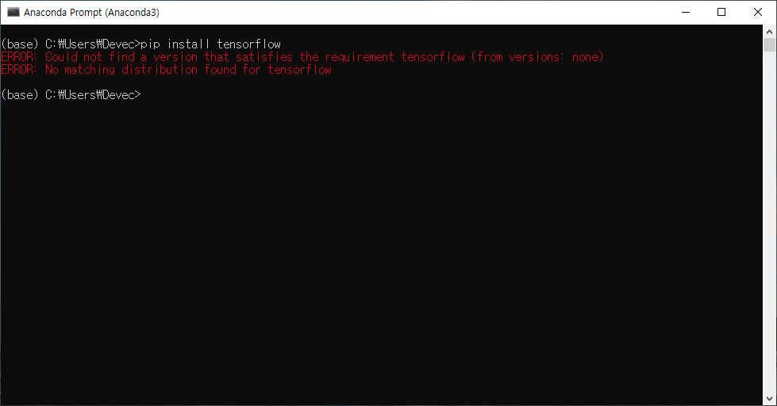
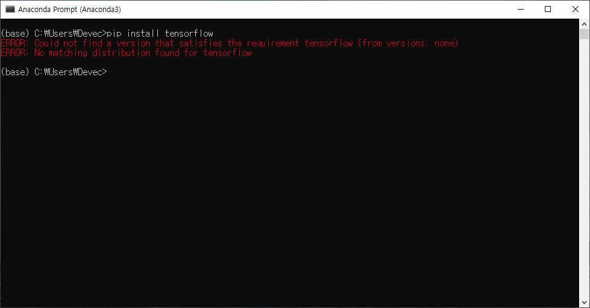
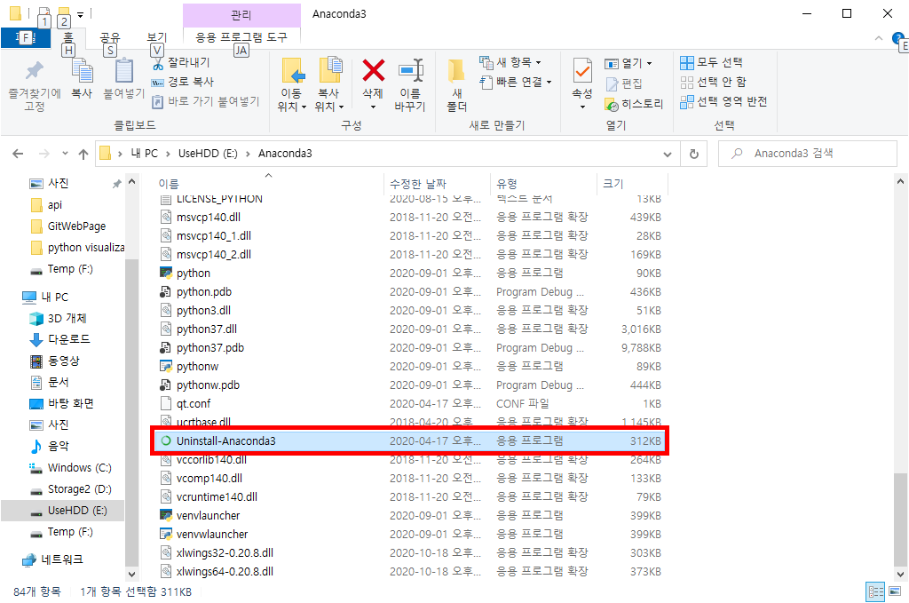
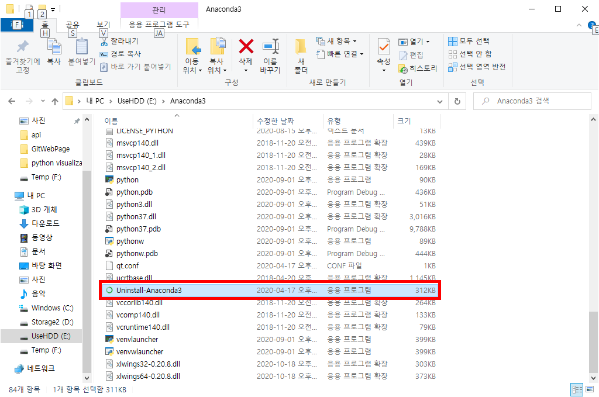

개발 환경 설정에 관한 Q&A
Q. 아나콘다를 사용중인데 설치한지 오래된것 같아 최신버젼을 재설치 할려고 합니다. 혹시 재설치 안하고 업데이트 하거나 하는 방법은 없나요?
Q. 텐서플로우를 사용하기위해 pip로 설치를 진행하려 했더니 버젼을 찾을수 없다면서 설치가 안됩니다.


A. 설치된 파이썬(혹은 아나콘다)가 몇bit 환경으로 설치된건지 확인해주세요.
참고로 텐서플로우는 32bit 환경을 지원하지 않습니다. 텐서플로우를 사용하기 위해서는 기존 파이썬을 삭제하고 64bit 환경으로 다시 설치하셔야 합니다.

참고로 텐서플로우는 32bit 환경을 지원하지 않습니다. 텐서플로우를 사용하기 위해서는 기존 파이썬을 삭제하고 64bit 환경으로 다시 설치하셔야 합니다.
Q. 윈도우에서 아나콘다를 제거하고 다시 설치하려고하는데 프로그램 추가 삭제에서 항목이 보이지 않습니다. 어떻게 제거해야 하나요?
A. 아나콘다가 설치된 폴더내에 언인스톨러(uninstaller)가 들어가 있습니다.
설치된 폴더로 이동하여 이 언인스톨러를 실행해서 삭제해주시고, PC를 리부팅을 하신다음에 설치하시려는 아나콘다를 설치해주시면 됩니다.

설치된 폴더로 이동하여 이 언인스톨러를 실행해서 삭제해주시고, PC를 리부팅을 하신다음에 설치하시려는 아나콘다를 설치해주시면 됩니다.
